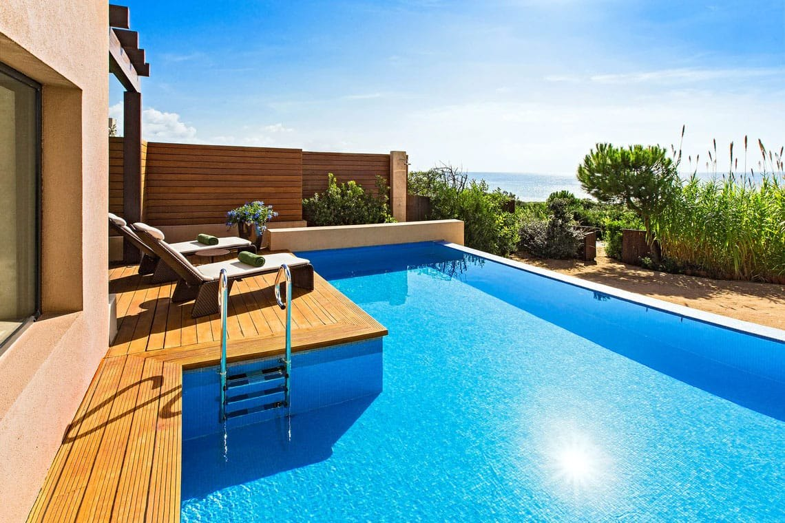
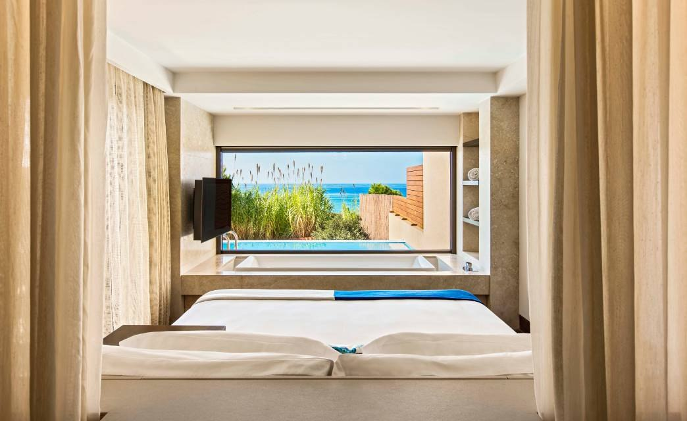
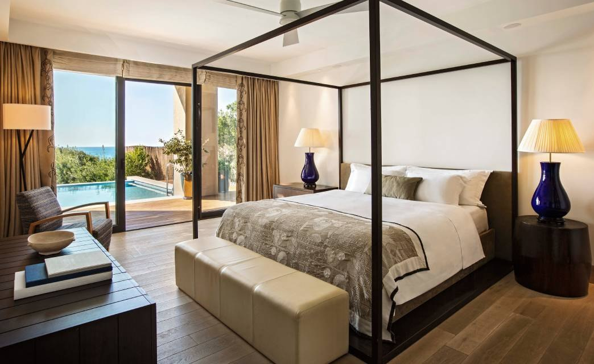

The Romanos, Costa Navarino : le luxe grec en Messénie
Élu meilleur resort de Grèce par les lecteurs de Condé Nast Traveler en 2024, à l'autre bout du pays que les Cyclades. Trois cent vingt et une chambres, un spa de 4 000 m² adossé au palais de Nestor, quatre parcours de golf. Et une question que la brochure n'aborde pas : à quelle taille un resort cesse-t-il d'être un hôtel ?

La piscine privée d'une chambre du rez-de-chaussée, à quelques mètres de la mer Ionienne. Presque toutes les chambres et suites de plain-pied en ont une. Photo : The Romanos, site officiel.
Verdict LMHS9,1/10 : la Grèce continentale à son meilleur, à condition d'aimer les grands domaines
- Ce qui écrase la concurrence, une densité d'équipements sans équivalent en Grèce : Anazoe Spa et ses 4 000 m², quatre parcours de golf 18 trous, le centre de tennis Mouratoglou, et des piscines privées à débordement sur presque toutes les chambres de plain-pied.
- Ce qui coince, l'échelle. Le Romanos n'est pas un hôtel isolé mais l'un des deux établissements de Navarino Dunes, sur un domaine qui en compte plusieurs. 321 chambres, un village de commerces, un parc aquatique : ce n'est pas une maison, c'est une petite ville.
- Le verdict, venez pour la Messénie, le spa et le golf, et prenez une chambre de plain-pied avec piscine. Cherchez l'intimité d'une maison d'hôtes et vous serez déçu : ce n'est pas ce que ce lieu propose, et il ne le prétend pas.
Ouvert d'avril à fin octobre, à Navarino Dunes, en Messénie, sud-ouest du Péloponnèse. 321 chambres, suites et villas. Anazoe Spa de 4 000 m². Quatre parcours de golf sur le domaine Costa Navarino. Numéro 1 des resorts de Grèce aux Condé Nast Traveler Readers' Choice Awards 2024. Score global : 9,1/10, moyenne simple de nos cinq axes, détaillée plus bas.
Un domaine, pas un hôtel : ce qu'il faut comprendre avant de réserver
La première chose à saisir sur Costa Navarino, c'est que le nom ne désigne pas un établissement mais un domaine, réparti sur plusieurs sites de la côte messénienne. Le Romanos occupe celui de Navarino Dunes, qu'il partage avec un second hôtel, The Westin. Entre les deux s'étend un ensemble de places, de venelles commerçantes et de restaurants qui fonctionne comme un bourg : on y dîne, on y fait ses courses, les enfants s'y croisent, le cinéma se projette en plein air.
Cette organisation est le vrai sujet de l'avis. Elle produit une densité d'expériences qu'aucun hôtel de taille normale ne peut offrir, et elle produit aussi ce qui va avec : de la circulation, du monde en juillet, et la sensation d'être client d'un lieu plutôt qu'invité d'une maison. Les deux choses sont vraies en même temps, et ce que vous en pensez décidera de votre séjour bien plus que le décor de la chambre.
321 chambres, et une chose à demander à la réservation

La piscine privée, seul arbitrage qui compte
Le resort compte 321 chambres, suites et villas, d'une architecture messénienne à laquelle des lignes contemporaines ont été greffées : pierre, tons de terre, bois, volumes bas posés dans les oliviers. La gamme va de la Deluxe côté jardin aux villas de bord de mer avec accès direct à la plage, en passant par les Infinity, les Premium Infinity et les catégories Ionian Exclusive, qui ajoutent un service de majordome et un check-in privé.
Une seule ligne de démarcation compte vraiment : presque toutes les chambres et suites de plain-pied disposent d'une piscine privée à débordement, les étages non. Sur un séjour de sept nuits en Messénie, où l'après-midi se passe à l'ombre, l'écart d'expérience entre les deux est considérable, et il n'apparaît pas toujours clairement au moment de réserver. Demandez explicitement le rez-de-chaussée avec piscine.
Anazoe Spa : 4 000 m² adossés au palais de Nestor
C'est le meilleur argument du resort, et il n'est pas seulement de surface. L'Anazoe Spa déploie 4 000 m² entre Le Romanos et le Westin, avec thalassothérapie, kinésithérapie, un parcours de chaleur et de froid qui comprend grotte de glace, douches à brume et saunas aux herbes.
Ce qui le distingue d'un beau spa d'hôtel tient à son ancrage. Ses soins signature reposent sur l'oléothérapie, c'est-à-dire l'huile d'olive locale, et cette orientation n'est pas un habillage marketing : elle s'appuie sur des pratiques inscrites sur les tablettes d'argile retrouvées au palais de Nestor, à quelques kilomètres de là. Le rituel le plus demandé, l'Odyssean Journey, suit le retour d'Ulysse : exfoliation au sel marin et à l'huile d'olive, cocon d'argile et de romarin, puis massage à la bougie coulante parfumée à la lavande et au bois de santal.
Peu d'hôtels européens peuvent adosser leur carte de soins à une source archéologique située dans leur propre paysage. C'est ce qui fait la différence entre un spa de resort et celui-ci.
À table : la question n'est pas le nombre, c'est Barbouni

Une table qui vaut le détour, et beaucoup d'options
Le domaine Costa Navarino aligne plusieurs dizaines de restaurants, bars et cafés, du grec au japonais en passant par l'italien et le grill. C'est beaucoup, et un chiffre de cette nature n'apprend rien : ce qui compte est de savoir lesquels valent le déplacement.
Barbouni est celui-là. Le restaurant occupe une plateforme de bois posée directement sur le sable, dessinée par l'agence grecque K-Studio, avec un plafond de bandes de tissu suspendues qui ondulent au vent tout en laissant passer l'air. La carte tient au poisson du jour, au poulpe, aux coquillages et à la friture. Autour, Armyra by Papaioannou pour la mer, Paráfrasi by CTC pour la cuisine grecque contemporaine, Flame pour la grillade, Da Luigi pour l'Italie, Onuki pour le Japon.
Golf et tennis : la vraie raison de venir hors saison
Costa Navarino est la première destination golfique de Grèce, et ce n'est pas contesté : quatre parcours de 18 trous sur le domaine, dont The Dunes Course au pied du Romanos, les autres à quelques kilomètres. Ils figurent régulièrement dans les classements européens et se jouent d'avril à octobre, avec des conditions bien meilleures en mai et en septembre qu'en plein été.
À côté, le centre de tennis Mouratoglou, décliné ici du modèle de l'académie française, propose terre battue, dur et gazon avec des entraîneurs de la structure. Ajoutez le vélo, le paddle, le kayak et le snorkeling, et vous obtenez un lieu où l'on peut passer une semaine sans jamais faire deux fois la même chose. C'est probablement le meilleur argument du Romanos hors des mois de plage.
La fiche LMHS détaillée
Notre fiche LMHS décompose l'établissement en cinq axes de poids égal, choisis selon ce qu'il propose réellement. La note globale est leur moyenne simple, vous pouvez la recalculer.
| Axe | Score | Commentaire |
|---|---|---|
| Cadre et architecture | 9,5/10 | Volumes bas en pierre posés dans les oliviers, intégration au relief messénien, façade sur la mer Ionienne. Rien d'un resort hors-sol. |
| Chambres et piscines | 9,5/10 | 321 clés, piscine privée à débordement sur presque toutes celles de plain-pied, villas avec accès direct à la plage. L'écart avec les étages est réel. |
| Restauration | 9,0/10 | Barbouni sur le sable vaut à lui seul le séjour. Plusieurs dizaines d'adresses sur le domaine, mais aucune étoile Michelin. |
| Spa et sport | 9,5/10 | Anazoe Spa, 4 000 m², oléothérapie adossée aux tablettes du palais de Nestor. Quatre golfs 18 trous, centre Mouratoglou. Sans équivalent en Grèce. |
| Rapport prix-expérience | 8,0/10 | Tarifs de haute saison élevés pour la Grèce continentale, et la chambre sans piscine privée ne délivre pas la même expérience au même tarif d'affichage. |
Score fiche LMHS : 9,1 / 10 · (9,5 + 9,5 + 9,0 + 9,5 + 8,0) ÷ 5 = 9,1 · Relevés du 3 août 2026.
Le bémol LMHS
Soyons directs : le Romanos vend une échelle que tout le monde n'a pas envie d'acheter.
Trois cent vingt et une chambres sur un site partagé avec un autre hôtel, un village commerçant, un parc aquatique et plusieurs dizaines de tables : en août, cela fait beaucoup de monde. Les photos de brochure, prises sur des terrasses privées à l'aube, ne racontent pas cette partie-là. Ceux qui cherchent une maison de vingt chambres au bord de l'eau se tromperont d'adresse, et ce n'est pas la faute de l'hôtel : c'est un malentendu de départ, que ce genre d'article existe justement pour lever.
Deuxième point, plus concret : l'écart entre une chambre de plain-pied avec piscine privée et une chambre à l'étage est considérable, alors que la nomenclature commerciale ne le hurle pas. Sur une semaine de juillet en Messénie, la piscine privée n'est pas un supplément d'âme, c'est le lieu où se passe l'après-midi.
Troisième point, saisonnier : le resort ferme de novembre à mars. Et l'accès demande un vrai trajet, l'aéroport de Kalamata étant le plus proche, à environ trois quarts d'heure de route, quand Athènes est à plusieurs heures. Ce n'est pas une escapade de week-end depuis la France.
Le mot de LucasLa Grèce continentale mérite mieux que sa réputation
On va en Grèce pour les îles, et on rentre en ayant vu beaucoup de bateaux. La Messénie, elle, offre ce que les Cyclades ont perdu : de l'espace, des oliviers, un site archéologique majeur à quinze minutes, une plage en forme de lettre grecque, et des villages où l'on dîne sans réserver. Le Romanos est l'adresse qui rend cette région accessible sans camper, et c'est son mérite principal, plus encore que son spa. Mon conseil tient en deux lignes. Venez en mai ou en septembre, quand la chaleur tombe et que le domaine respire. Et prenez la chambre avec la piscine : dans un lieu de cette taille, c'est le seul moyen d'avoir un endroit à vous.
Lucas Lecoq, rédacteur en chef
Pour qui, et pour quelle saison
Pour une famille. C'est le profil auquel le lieu répond le mieux : clubs enfants par tranche d'âge, parc aquatique, plage surveillée, restaurants variés, et assez d'espace pour que personne ne se marche dessus. Le luxe y est décontracté, sans code vestimentaire ni raideur.
Pour un golfeur. Quatre parcours de 18 trous accessibles depuis la chambre, en avril, mai, septembre ou octobre. Aucune autre destination grecque n'offre cela.
Pour un couple, à condition de choisir. La piscine privée, la plage tôt le matin, un dîner chez Barbouni et le spa : l'expérience romantique existe, mais elle se construit, elle n'est pas donnée par le lieu comme elle le serait dans une maison de vingt chambres. Voyez notre sélection romantique parisienne pour l'argument inverse, celui de l'échelle.
Pas pour un séjour d'hiver, le resort étant fermé de novembre à mars, ni pour un week-end court : entre le vol et la route, la Messénie mérite une semaine.
Autour : ce qui justifie de sortir du domaine
Ce serait dommage de rester derrière la barrière. Le palais de Nestor, l'un des sites mycéniens les mieux conservés de Grèce et la source des tablettes qui inspirent le spa, est à quelques kilomètres. La plage de Voidokilia, dessinée en oméga presque parfait entre deux caps, est l'une des plus photographiées du pays et se rejoint à pied depuis la lagune de Gialova. Au-dessus, la forteresse de Palaiokastro domine la baie de Navarin. Et Pylos, petit port à quelques minutes, offre le dîner que le resort ne peut pas donner : une place, des tavernes, et personne qui vous appelle par votre nom de réservation.
FAQ : The Romanos, Costa Navarino
Quelle chambre choisir au Romanos ?
Une chambre ou une suite de plain-pied avec piscine privée à débordement. Presque toutes celles du rez-de-chaussée en ont une, les étages non, et l'écart d'expérience est considérable sur un séjour d'été en Messénie. Les villas de bord de mer ajoutent l'accès direct à la plage, et les catégories Ionian Exclusive un service de majordome et un check-in privé. Demandez explicitement l'étage à la réservation, la nomenclature commerciale ne le précise pas toujours.
Quelle est la meilleure période pour séjourner au Romanos ?
Mai, juin, septembre et début octobre. La Messénie est chaude en juillet et en août, et c'est aussi la période où le domaine est le plus fréquenté. Le printemps et le début de l'automne offrent la mer encore bonne, les parcours de golf dans leurs meilleures conditions et une fréquentation nettement moindre. Le resort ferme de novembre à mars.
Le Romanos convient-il aux familles ?
C'est même le profil qu'il sert le mieux. Le domaine réunit des clubs enfants par tranche d'âge, un parc aquatique partagé avec le Westin, une plage, du tennis et assez d'espace pour que chacun trouve sa place. L'atmosphère est décontractée, sans code vestimentaire. Le revers de la même médaille : en plein été, il y a beaucoup de monde, et ce n'est pas l'adresse d'une escapade silencieuse à deux.
Que vaut l'Anazoe Spa ?
C'est le meilleur argument du resort. 4 000 m², thalassothérapie, parcours de chaleur et de froid avec grotte de glace et saunas aux herbes, et surtout une carte de soins bâtie sur l'oléothérapie, l'huile d'olive locale, selon des pratiques inscrites sur les tablettes d'argile du palais de Nestor, tout proche. Le rituel Odyssean Journey suit le retour d'Ulysse : exfoliation au sel marin et à l'huile d'olive, cocon d'argile et de romarin, massage à la bougie coulante lavande et santal.
Faut-il louer une voiture ?
Oui, si vous comptez sortir du domaine, et vous devriez : le palais de Nestor, la plage de Voidokilia, la lagune de Gialova et le port de Pylos valent chacun le déplacement, et ils sont à moins d'une demi-heure. À l'intérieur du domaine, les navettes et voiturettes suffisent. L'aéroport le plus proche est celui de Kalamata, à environ trois quarts d'heure de route.
The Romanos a-t-il reçu des distinctions ?
Oui. Il a été élu numéro 1 des resorts de Grèce aux Condé Nast Traveler Readers' Choice Awards 2024, un classement établi par le vote des lecteurs et non par un jury. Le resort figure également parmi les établissements distingués par le magazine en 2026. À nuancer comme tout palmarès de lecteurs : il mesure la satisfaction déclarée, pas un protocole d'inspection.
Méthode et sources
Avis établi selon la fiche LMHS : cinq axes de poids égal (cadre et architecture, chambres et piscines, restauration, spa et sport, rapport prix-expérience), notés sur 10, dont la moyenne simple donne le score global. Aucun séjour de contrôle n'a été effectué pour cet avis, et nous ne prétendons pas le contraire : l'analyse repose sur les données publiques de l'établissement et du domaine Costa Navarino, relevées le 3 août 2026, ainsi que sur la distinction Condé Nast Traveler Readers' Choice 2024. Sont vérifiés et publiés : les 321 chambres, suites et villas, la présence d'une piscine privée à débordement sur presque tous les hébergements de plain-pied, les 4 000 m² de l'Anazoe Spa, l'oléothérapie adossée aux tablettes du palais de Nestor, la composition du rituel Odyssean Journey, les quatre parcours de golf du domaine et le centre de tennis Mouratoglou. Aucun tarif n'est publié : le resort n'affiche pas de prix d'entrée public, les montants qui circulent proviennent de distributeurs et varient trop d'une saison à l'autre pour être repris ici. Aucun partenariat commercial, aucune affiliation, aucun séjour offert. Photographies : The Romanos, site officiel.
Sources utiles
- The Romanos, site officiel
- Costa Navarino, page du resort
- Anazoe Spa, site officiel
- The Romanos, fiche Luxury Collection
Pour aller plus loin
- Shangri-La The Shard, avis : Londres vu du 52e étage
- Monteverdi Tuscany : le village toscan devenu hôtel d'auteur
- San Montano Resort & Spa, Ischia, un resort méditerranéen de même famille, dans le golfe de Naples
- Les meilleurs hôtels 5 étoiles en Sardaigne : 7 adresses
- Les 8 meilleurs hôtels avec plage à l'île Maurice
- Croisières sur le Nil : les 5 plus belles, comparées
- Notre méthode, les grilles de notation et les règles d'indépendance